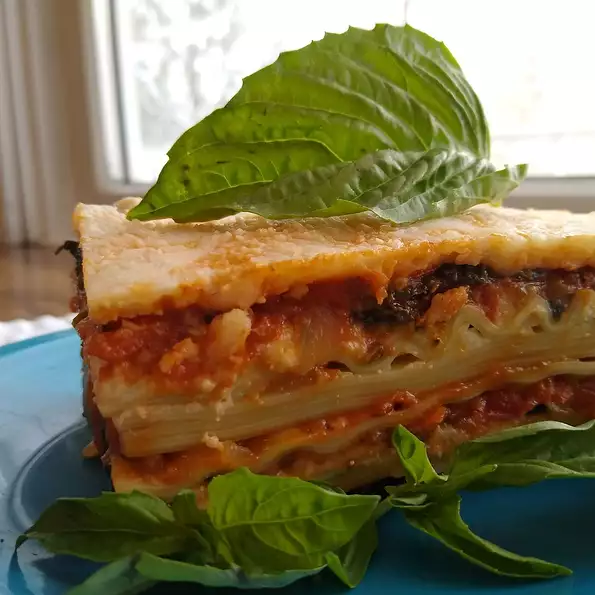

Lasagna

Meatless Monday Lasagna
We are always looking for recipes to add to our Meatless Monday rotation. Bumping up the protein is important
for our 3 kids, so adding tofu to the cheese mixture of vegetarian lasagna works great. Use the excess tofu to
make a high-protein salad dressing.
Ingredients
- 1 (16 ounce) package dry lasagna noodles
- 3 tablespoons olive oil, divided
- 4 cups shredded part-skim mozzarella cheese, divided
- 1 (15 ounce) container part-skim ricotta cheese
- ½ cup shredded Parmesan cheese, divided
- 4 ounces silken tofu
- 4 ounces silken tofu
- 2 large eggs
- 2 large carrots, shredded
- 2 medium zucchini, diced
- 1 medium yellow onion, diced
- 1 medium red bell pepper, diced
- 1 cup sliced portobello mushrooms
- 1 ½ (28 ounce) jars pasta sauce
- 4 ounces fresh baby spinach